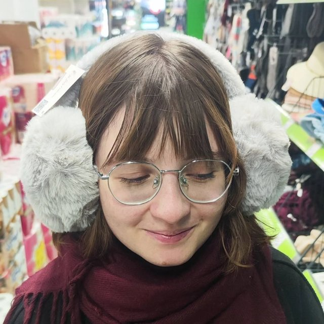

Своя обжарка
Зерно из Эфиопии, Колумбии и Бразилии. Обжариваем небольшими партиями, чтобы кофе всегда был свежим.
О нас
Рассказываем, откуда берётся наш кофе и почему гости возвращаются.
Почему мы
Зерно из Эфиопии, Колумбии и Бразилии. Обжариваем небольшими партиями, чтобы кофе всегда был свежим.
Круассаны, синнабоны и чизкейки готовим на месте. К 8 утра всё уже на витрине.
Быстрый Wi‑Fi, розетки у каждого столика и тихая музыка — приходите работать или встречаться с друзьями.
Наша история
«Корица» началась в 2016 году с кофейной тележки у Каменного моста. Через два года мы открыли маленький зал на улице Кирова, а в 2021 году поставили собственный ростер, чтобы контролировать вкус от зелёного зерна до чашки.
Сегодня у нас 24 посадочных места, летняя веранда и команда из восьми бариста и кондитеров. Мы по-прежнему знаем постоянных гостей по имени и помним, кто пьёт капучино на овсяном.

★ Сотрудница месяцаОктябрь 2026
Россошанская Ю. В.
Помнит, кто пьёт капучино на овсяном, рисует самые аккуратные сердечки на латте и даже в калужский мороз приходит на смену с улыбкой.
Говорят, в этих наушниках слышно, как кофе становится вкуснее. Проверять не будем — просто скажите спасибо, когда увидите её за стойкой ☕
Как мы готовим
Закупаем зелёное зерно урожая текущего года у проверенных импортёров.
Обжариваем партиями по 5 кг и даём зерну отдохнуть 5–7 дней.
Каждое утро бариста настраивают помол и дегустируют эспрессо.
Готовим напиток при вас и подаём в течение минуты.